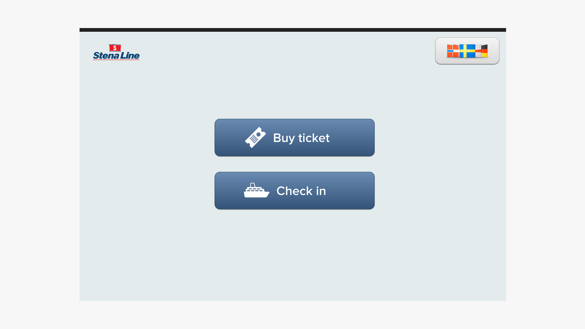
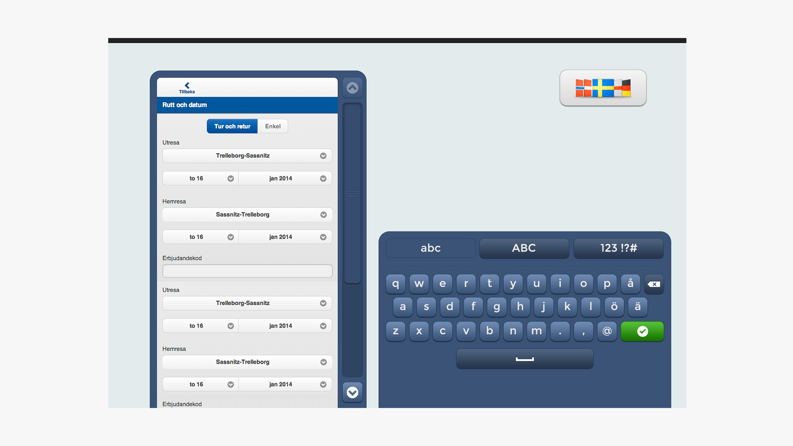
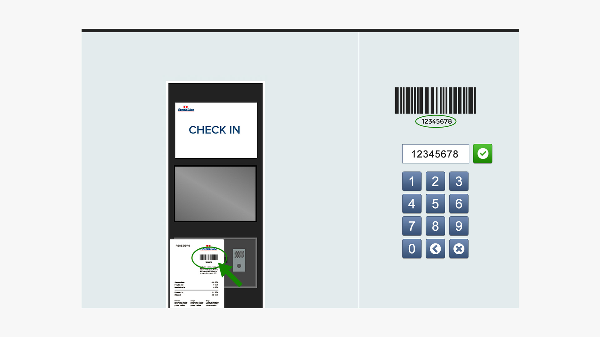
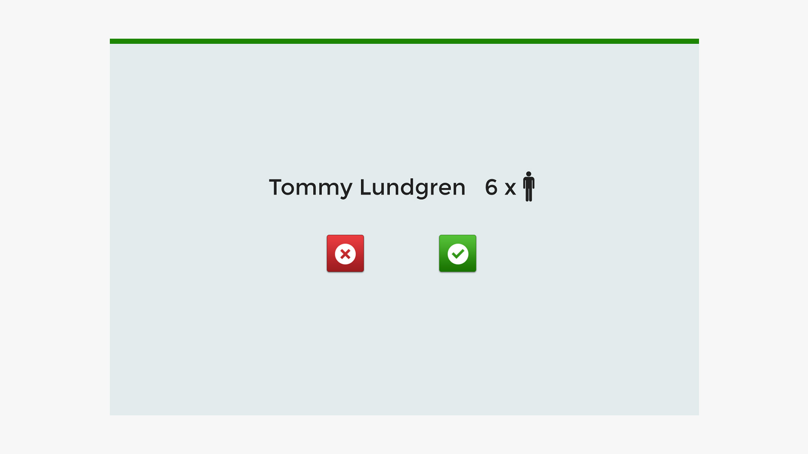
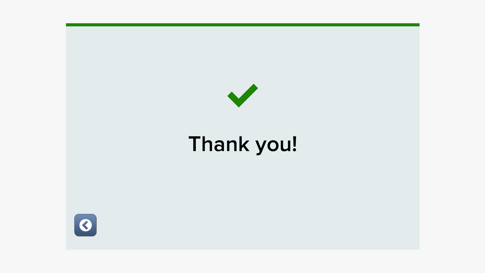
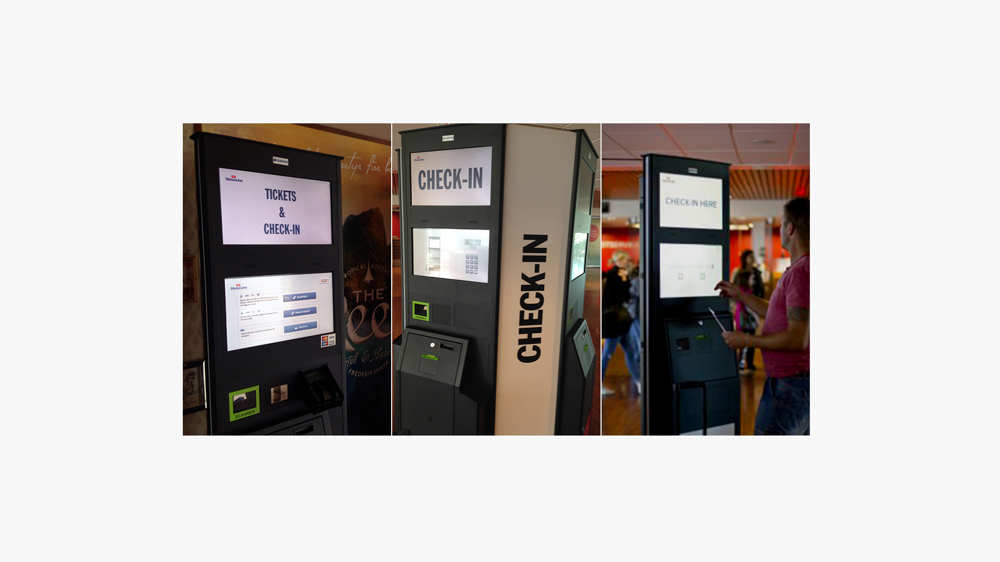
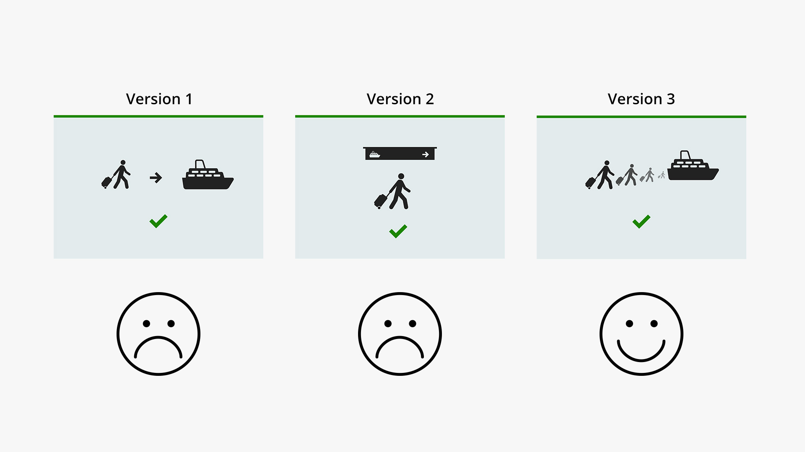

Stena Line is one of the world's largest ferry operators. I worked with Stena Line in 2013 and
helped them design check-in kiosks for foot passengers traveling between Gothenburg and Frederikshavn,
Denmark. The machines have been successful and are now used in several European terminals
like Denmark, Sweden, Norway, England and the Netherlands.
Role
Interaction Designer





The user interface only uses the absolute minimum of text in the and rely more on color,
animation and icons to guide the user.


We did a lot of observations and user studies where we watched real passengers interact with
early version of the user interface. This helped us to iterate the design and make improvements.